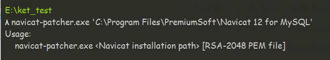
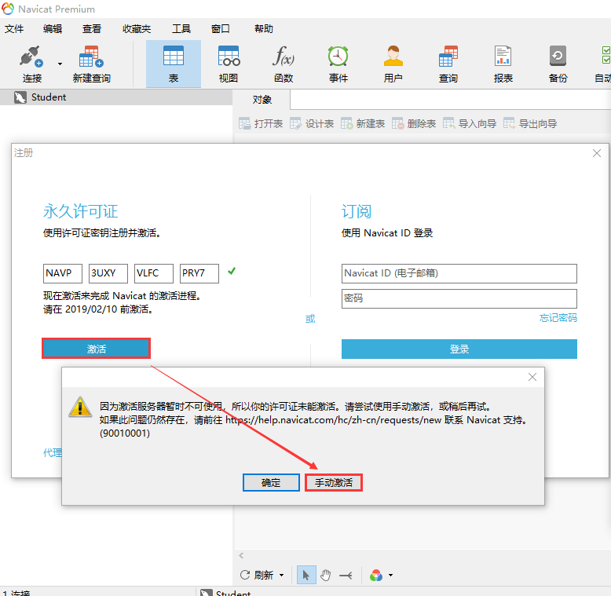
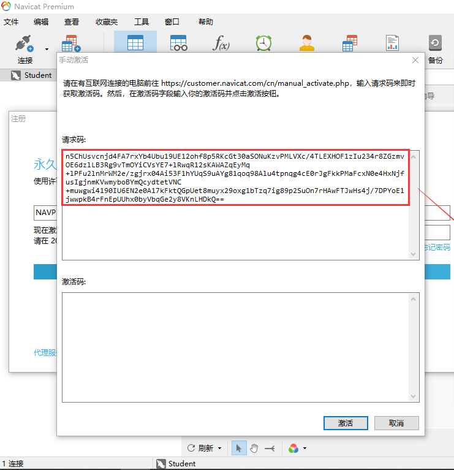

这份repo将会告诉你Navicat是怎么完成离线激活的。
注册机是怎么工作的?
如何使用这个注册机
从这里 下载最新的release。
使用navicat-patcher.exe替换掉navicat.exe和libcc.dll里的Navicat激活公钥。
1 navicat-patcher .exe <Navicat installation path > [RSA-2048 PEM file]
<Navicat installation path>: Navicat的完整安装路径。
这个参数必须指定。
[RSA-2048 PEM file]: RSA-2048私钥文件的完整路径或相对路径。
这个参数是可选的。 如果未指定，navicat-patcher.exe将会在当前目录生成一个新的RSA-2048私钥文件。
例如：(在cmd.exe中)
1 navicat-patcher.exe "C:\Program Files\PremiumSoft\Navicat Premium 12"
地址字符串必须用双引号，使用单引号会报错

Navicat Premium 12.1.12 简体中文版已通过测试 。下面将是一份样例输出。
1 2 3 4 5 6 7 8 9 10 11 12 13 14 15 16 17 18 19 20 21 22 23 24 25 26 27 28 29 30 31 32 33 34 35 36 37 38 39 40 41 42 43 44 45 46 47 48 49 50 51 52 53 54 55 56 57 58 59 60 61 62 63 64 65 66 67 68 69 70 71 72 73 74 75 76 77 78 79 80 81 82 *************************************************** * Navicat Patcher by @DoubleLabyrinth * * Release date: Jan 19 2019 * *************************************************** Press Enter to continue or Ctrl + C to abort. MESSAGE: PatchSolution0 will be omitted. MESSAGE: PatchSolution3: Keywords[0] has been found: Relative Machine Code Offset = +0x0000000001644a08 Relative Machine Code RVA = +0x0000000001645608 Patch Offset = +0x00000000023d56e4 Patch Size = 3 byte(s) ... ... ... MESSAGE: PatchSolution3: Keywords[110] has been found: Relative Machine Code Offset = +0x000000000165155e Relative Machine Code RVA = +0x000000000165215e Patch Offset = +0x0000000001651561 Patch Size = 1 byte(s) MESSAGE: PatchSolution2 will be omitted. MESSAGE: PatchSolution1: Keywords[0] has been found: offset = +0x021f7390. MESSAGE: PatchSolution1: Keywords[1] has been found: offset = +0x0074bd39. MESSAGE: PatchSolution1: Keywords[2] has been found: offset = +0x021f70a0. MESSAGE: PatchSolution1: Keywords[3] has been found: offset = +0x0074bd1f. MESSAGE: PatchSolution1: Keywords[4] has been found: offset = +0x021f708c. MESSAGE: Generating new RSA private key, it may take a long time. MESSAGE: New RSA private key has been saved to RegPrivateKey.pem. Your RSA public key: -----BEGIN PUBLIC KEY----- MIIBIjANBgkqhkiG9w0BAQEFAAOCAQ8AMIIBCgKCAQEAsWnV5hQxlXvDA3Ad4k5N ZLz4cO+iGEPegSovIDcwTo097I+0pXYKPTVl+0iKC5JtJRObb4Xx9yK9gGwqkcxo o6WzKq0xY1jz7X6obxwlQCNse3Os1wr0rIY0UzP1dCpkW/5MwGbFxiB6PEVqkzmJ CmHBzZDRu/jAuL1nyoiGnUStqwENNYhyl4k7r8AiJkBZGMOCrj6v0JfgNna25Ce6 QCFojlY4dkYQ5/7njQ3qpLwMeLEXEysMW3aUScSB68/vsHnB4C0fIkwfEPYZ/AC5 AqbWHVbNmveB3rjV+tZZxXcLE8ArgKh1Gs+2VtnL09gwHm6WcpyPZ42G6tMDjWyw 1 wIDAQAB - ----END PUBLIC KEY----- ****************************************** * PatchSulution3 * ****************************************** @ +023d56e4: 4 D 49 49 ---> 4 D 49 49 @ +01644a63: 42 49 ---> 42 49 @ +01644a68: 6 A ---> 6 A @ +01644ace: 41 ---> 41 ... ... ... @ +023d58d4: 36 63 6A ---> 47 36 74 @ +023d58d8: 78 6C 6A 75 75 51 61 ---> 4D 44 6A 57 79 77 31 @ +023d58e8: 77 49 44 41 ---> 77 49 44 41 @ +0165155c: 51 41 ---> 51 41 @ +01651561: 42 ---> 42 ****************************************** * PatchSulution1 * ****************************************** @ +0x021f7390 Previous: +0x00000000021F7390 44 37 35 31 32 35 42 37 30 37 36 37 42 39 34 31 D75125B70767B941 +0x00000000021F73A0 34 35 42 34 37 43 31 43 42 33 43 30 37 35 35 45 45B47C1CB3C0755E +0x00000000021F73B0 37 43 43 42 38 38 32 35 43 35 44 43 45 30 43 35 7CCB8825C5DCE0C5 ... ... ... @ +0x021f708c Previous: +0x00000000021F7080 31 32 32 35 4f 45 29 2e 00 00 00 00 39 32 39 33 1225OE).....9293 +0x00000000021F7090 33 00 00 00 00 00 00 00 00 00 00 00 00 00 00 00 3............... After: +0x00000000021F7080 31 32 32 35 4f 45 29 2e 00 00 00 00 32 37 45 38 1225OE).....27E8 +0x00000000021F7090 45 00 00 00 00 00 00 00 00 00 00 00 00 00 00 00 E............... MESSAGE: Patch has been done successfully.
接下来使用navicat-keygen.exe来生成序列号和激活码
1 navicat-keygen.exe <-bin|-text > [-adv] <RSA-2048 PrivateKey(PEM file )>
<-bin|-text>: 必须是-bin或-text。
如果指定了-bin，navicat-keygen.exe最终将生成license_file文件。这个选项是给Navicat旧激活方式使用的。
如果指定了-text，navicat-keygen.exe最终将生成Base64样式的激活码。这个选项是给Navicat新激活方式使用的。
这个参数必须指定。
这个参数是可选的。 如果指定了这个参数，navicat-keygen.exe将会要求你手工填写产品ID号、语言标识号。这个选项一般是给以后用的。
<RSA-2048 PrivateKey(PEM file)>: RSA-2048私钥文件的完整路径或相对路径。
这个参数必须指定。
例如：(在cmd.exe中)
1 navicat-keygen .exe -text .\RegPrivateKey .pem
你会被要求选择Navicat产品类别、语言以及输入主版本号。之后会随机生成一个序列号。
1 2 3 4 5 6 7 8 9 10 11 12 13 14 15 16 17 18 19 20 21 22 23 24 25 26 27 28 29 30 31 32 33 34 35 Select Navicat product: 0. DataModeler1. Premium2. MySQL3. PostgreSQL4. Oracle5. SQLServer6. SQLite7. MariaDB8. MongoDB9. ReportViewer (Input index)> 1 Select product language: 0. English1. Simplified Chinese2. Traditional Chinese3. Japanese4. Polish5. Spanish6. French7. German8. Korean9. Russian10. Portuguese (Input index)> 1 (Input major version number, range: 0 ~ 15, default: 12)> 12 Serial number: NAVO-2ORP-IN5A-GQEE Your name:
你可以使用这个序列号暂时激活Navicat。
接下来你会被要求输入用户名和组织名；请随便填写，但不要太长。
1 2 3 Your name: root Your organization: root Input request code (in Base64), input empty line to end :
之后你会被要求填入请求码，该请求码是在navicat中输入上方生成序列号进行离线激活后，会生成一段请求码，然后复制过来。注意 不要关闭命令行 .
断开网络 并打开Navicat。找到注册窗口，并填入keygen给你的序列号。然后点击激活按钮。

一般来说在线激活肯定会失败，这时候Navicat会询问你是否手动激活，直接选吧。
在手动激活窗口你会得到一个请求码，复制它并把它粘贴到keygen里。最后别忘了连按至少 两下回车 结束输入。
1 2 3 4 5 6 7 8 9 10 11 12 13 14 15 16 17 18 19 Your name: root Your organization: root Input request code (in Base64), input empty line to end: EnoJQKOD5h08rGvcpxJ288YwA0e5AjIlu/WQUVde9rcnjC4RfYPQ83Rp047nohWBn02UELpAt9NAVWp6Nww+4gxQjgkXJ19wb6cRY+V68xLIJbZXmByXBQwWL4X4lB3RxpcS5y2fAk/ iipFaFu5XE8yhC1o129IVuuaCE3lwzAuB563BKSKmp4Xr1vSqW6EDeCtKp8PY91nSt4htHF11Sfx8v0ASfdbu75ePTB3Rf/nzkbCKv8E63E6mVSRWqDuQ8didqXQhci7qjPICvBD6ne5FZhDGEJi6hNSwdKeTbj/ ZUBxFScZYWsskFjVL5u5RcdLo0Gzp8H7YOTI7OfJarg== Request Info: {"K" :"NAVADD22GI4NXPU5" , "DI" :"DJym852txVo8XGZkDzPn" , "P" :"WIN" } Response Info: {"K" :"NAVADD22GI4NXPU5" ,"DI" :"DJym852txVo8XGZkDzPn" ,"N" :"root" ,"O" :"root" ,"T" :1565768523 } License: GUk9coMkfoI2AtUiQ2PfDjlR6rybOrhY+q6azg5f7H+AwgIsVp6jWS1vb2NgkiXx u9NuoNeR8T2JiOqRC90umfdEqit0MGaGpDL/Wk6o+HNcKZmdbl9tImhGxxaj3Qib Yn3EzIQOz+hP7ipoG7kmIxzvmBOok0tDhrOhDzhzsPmAvFxTndQgU5hgCOIcHJVT PerF/SK/ lTMHSWqgwNyl2M3APBCxvCIjw6omFNwRXY3JD3zKUIiSWqsQT0mCBDby 4 k1V7IhCBzOHpBTHLLbjSG8copp37rgcn8PK0FFL8yUCDCmYzDBvE8B1KTYgmNn6dWf7BT0jyOoRIoYwIApNmQ==

如果不出意外，你会得到一个看似用Base64编码的激活码 license 。直接复制它，并把它粘贴到Navicat的手动激活窗口，最后点激活按钮。如果没什么意外的话应该能成功激活。
转载至 Navicat脱机激活(亲测Navicat for MySQL)
-------------本文结束